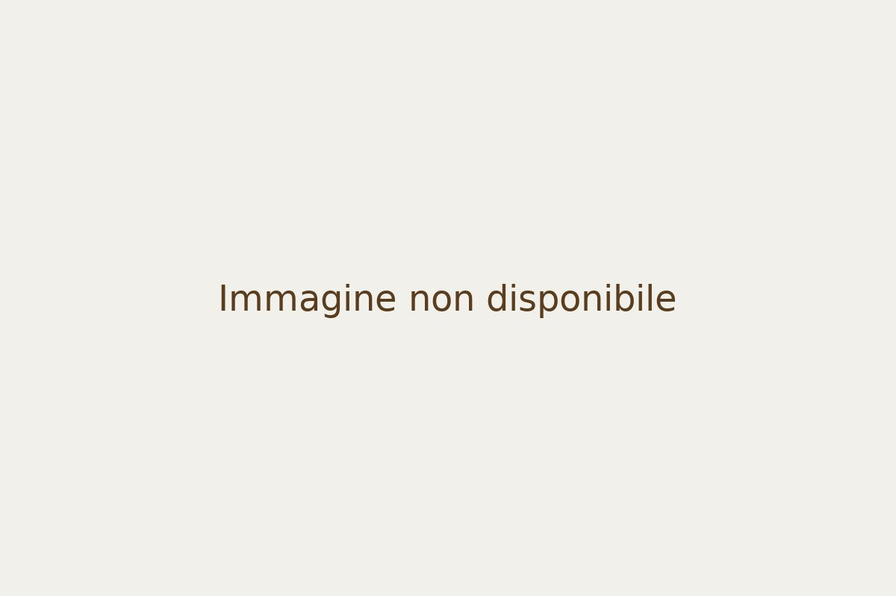

Home
›
Catalogo
› S.Agostino, S. Romualdo Abate, S. Francesco d'Assisi, S. Stefano, in paese con veduta di gloria d'angeli
S.Agostino, S. Romualdo Abate, S. Francesco d'Assisi, S. Stefano, in paese con veduta di gloria d'angeli

Oretti Manoscritti
Home
Catalogo
Autori
Manoscritti
Mappa
Ricerca
S.Agostino, S. Romualdo Abate, S. Francesco d'Assisi, S. Stefano, in paese con veduta di gloria d'angeli
Scheda tratta dal manoscritto B109
Autore
Carracci Ludovico
Luogo
Bologna
Tecnica
olio su rame
Note
piccolo rametto
← Torna a tutte le opere
← Opera precedente
Torna al Catalogo
Opera successiva →